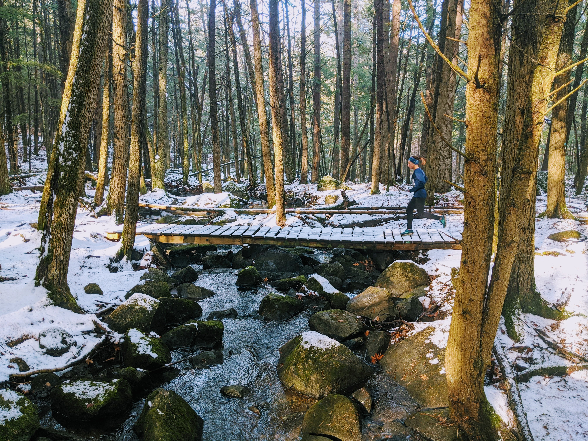

A few days after nonessential business closing due to the COVID-19 pandemic, the streets and trails of Philadelphia are filled with runners. While it’s nice that a lot of people have reverted to this basic form of exercise,{{%sn%}}Welcome to the club!{{%/sn%}} it pains us regular runners physically when we see you run in jeans and cotton t-shirts. If running for you is a outdoor family activity and the goal is just to have fun, by all means, carry on! But if you’re new and want to avoid injuries and look more like a pro (or less like a noob), you’re in luck. This post is written for you! Now, I’m probably the most average runner you will ever take advice from, but I have successfully talked a few friends into running marathons, so that must mean something. Right?
Get a good pair of shoes. If running is going to be a regular activity for you, those Converse’s are not going to cut it. Ideally, you would want to go in a running store to have a shoe fit, but now that they’re all closed, I hope you find a good temporary solution online, with proper heel and arch support. As a rule of thumb, your running shoes should be 0.5 – 1 US size larger than your other footwear. Most foot pains come from shoes being too tight, not too loose. {{%sn%}}I feel like just a fraud giving advice about shoes while nursing my own plantar fasciitis, but I got it because of improper footwear, people!{{%/sn%}}
When you first start out running, socks are perhaps the last clothing items you will think of purchasing. But I’m telling you, invest in a few good pairs of socks and baby them!{{%sn%}}Please please let them air dry.{{%/sn%}} You’ll thank me later. I like the Feeture No Show Ultra Light for warmer temperature and Max Cushion for colder.
Oh, and AVOID ANYTHING COTTON! Shirts or socks. Unless you don’t mind foot pain and blisters and chafing, get some moisture-wicking fabric. It’ll do wonders.
You will figure this out soon enough, but why not get it over with now? Dress much less than you think you’ll need. Unless it feels like 2° F like at the 2018 Upper Valley Norwich Turkey Trot, leave the sweatpants home!
I get it: you don’t like being freezing in the first half a mile. Enters layering! But use light (again, ideally sweat-wicking) layers. Trust me, you don’t want to haul around that thick fleece hoodie or wool scarf after mile 1. If it’s above 40° F, you’ll be okay with shorts. If you’re really unsure, there are great dress-by-temperature calculators like this one and this one that one could utilize.
While we’re here, buffs are wonderfully versatile items that will totally be worth your investment!
20 minutes into my run along the Great Wall of Malta, 2020-02-26. If you look closely, you can trace the wall!
OKAY. Enough with the clothing! I’m a strong believer in the secret power of clothes, but let’s actually talk about running.
You began to run, and that’s a great start. I hope you stay running.
Slow pace. Slow progression.
Nothing will crush your determination and passion for running more than the feeling of defeat after one mile. So start slow. Slow enough so that you can carry on a conversation with an imaginary friend. Then hopefully a real friend will show up to run with you after #covid19.
Stay with it. Both during your run and during the week/month/year ahead. Later into your running, people will talk to you about negative split. But for now, stay at that slow pace for the predetermined number of miles. Once your milage increases, you’ll get faster. But try not to increase your weekly milage over 30% at a time. As you run more, you’ll get excited to increase that number, but please take it slow. Also, words on the street is that 28 miles a week yields optimal performance.
Try to land softly mid-foot and have a light, forward posture. For me, this means taking shorter strides, and I’m still working on this.
For runs shorter than 10 miles during this season, just bring a 500 mL water bottle, you’ll be fine. If you must have breakfast before your morning run, leave at least one hour for your tummy to digest. I’m always eager to get out there early, so I often opt for something light (e.g., half an apple) before heading out for my 6-7 mile run. But everyone is different, you so do you!
You’ll be in pain. There’s no doubt about it. Your muscles will be sore, your feet will complain, your body will fatigue. But if there are ways to reduce some of it and prevent injuries, wouldn’t you do it? Theoretically, yes, but it’s easier said than done, especially when no one is keeping you accountable. I particularly dread stretching and foam rolling. It was a lot easier when my running coach forced us to do it together. {{%sn%}}I’m grateful for you, Arcadia.{{%/sn%}} However, I have found that a pre-specified routine like this one really helps me get on with my stretching and feel a lot better the next day!
Social distancing does not require emotional distancing! If a runner waves to you, please give back some signal, even just a nod. If they’re new, great — they’ll see that veteran runners are friendly too! If they’re a veteran, even better! Just be kind, I guess.
I can’t recommend getting a running partner right now, but it would be nice, once the corontine is over, if you find one whose pace’s similar to yours. The best conversations I have had happened during my runs. Also, follow a few runners on Strava or Instagram if you have those. {{%sn%}}Brian Reynolds, Liz Coda and Susanna Simer are my local idols.{{%/sn%}} At the Philadelphia Marathon Expo 2019, during a long, awkward silence while people are trying to get a photo on stage, I did yell “I love you, Des!” to Des Linden, and she waved back! Anyhow, the point is, follow someone who will inspire you and keep you running, even when it’s dark, rainy and cold out.{{%mn%}}Thank you, Caroline.{{%/mn%}}
With all that said, take every running advice with a grain of salt. Once again, everyone is different, so take what feels good for you and leave what doesn’t. I hope all of you beginners out there start feeling like a pro by dressing appropriately and running in good pace and form, and I hope you stick with it even after the pandemic.

P.S. I apologize if I sound a bit like a schmuck. I recently finished Peter Sagal’s The incomplete book of running, which is an incredibly captivating and charming book, but I guess some of his wry humor is rubbing off on me (though probably poorly).